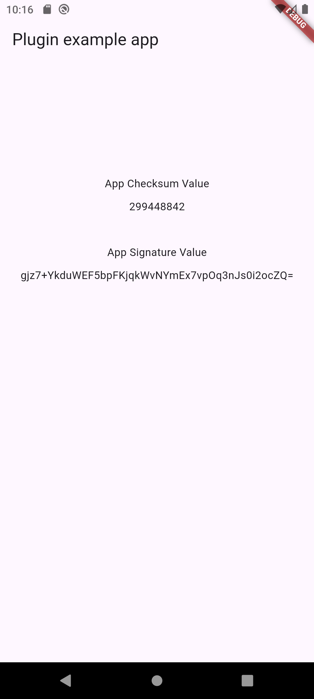
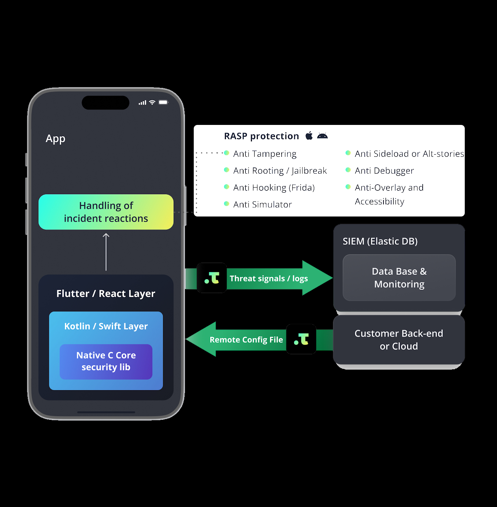

Resilience Against Reverse Engineering and Tampering
Einleitung
Übersicht
Maßnahmen wie Code-Verschleierung, Anti-Debugging, Anti-Manipulation und Runtime Application Self-Protection (RASP) erhöhen die Widerstandsfähigkeit einer App
Foto von iFixit
- Das Fehlen dieser Maßnahmen stellt nicht von sich aus eine Schwachstelle dar.
- Resilienzmaßnahmen bieten zusätzlichen Schutz gegen bedrohungsspezifische Angriffe.
Geschäftliche Perspektive
Hilft, Risiken zu mindern wie:
- Diebstahl oder Kompromittierung von proprietären Algorithmen, Geschäftsgeheimnissen, Kundendaten, KI- oder Machine-Learning-Modellen
- Betrug, Schummeln oder Umsatzverlust in Online-Spielen, Finanz-Apps oder Abomodellen
- Rechtliche und reputationsschädigende Folgen aufgrund von Vertrags- oder Regelverstößen
- Schädigung des Markenimages durch negative Publicity oder Unzufriedenheit der Kunden
Transparenz und offene Prüfperspektive
In einigen Kontexten, wie z.B. bei Regierungs-, Gesundheits- oder anderen Anwendungen von öffentlichem Interesse, sind Resilienzmaßnahmen möglicherweise aus mehreren Gründen nicht ideal:
- Sie verringern die Transparenz darüber, was die kompilierte Anwendung tut.
- Unabhängige Überprüfung der kompilierten Anwendung ist schwieriger.
- Die Vielfalt der OS kann durch false positives zum Ausschluss legitimer Benutzer führen.
Verification Controls
MASVS-RESILIENCE-1
The app validates the integrity of the platform.
MASVS-RESILIENCE-2
The app implements anti-tampering mechanisms.
MASVS-RESILIENCE-3
The app implements anti-static analysis mechanisms.
MASVS-RESILIENCE-4
The app implements anti-dynamic analysis techniques.
Weakness Enumeration
MASVS-RESILIENCE-1
L2
- MASWE-0008: Missing Device Secure Lock Verification Implementation
R
- MASWE-0097: Root/Jailbreak Detection Not Implemented
- MASWE-0098: App Virtualization Environment Detection Not Implemented
- MASWE-0099: Emulator Detection Not Implemented
- MASWE-0100: Device Attestation Not Implemented
MASVS-RESILIENCE-2
R
- MASWE-0104: App Integrity Not Verified
- MASWE-0105: Integrity of App Resources Not Verified
- MASWE-0106: Official Store Verification Not Implemented
- MASWE-0107: Runtime Code Integrity Not Verified
MASVS-RESILIENCE-3
R
- MASWE-0089: Code Obfuscation Not Implemented
- MASWE-0090: Resource Obfuscation Not Implemented
- MASWE-0091: Anti-Deobfuscation Techniques Not Implemented
- MASWE-0092: Static Analysis Tools Not Prevented
- MASWE-0093: Debugging Symbols Not Removed
R
- MASWE-0094: Non-Production Resources Not Removed
- MASWE-0095: Code That Disables Security Controls Not Removed
- MASWE-0096: Data Sent Unencrypted Over Encrypted Connections
MASVS-RESILIENCE-4
- MASWE-0067: Debuggable Flag Not Disabled
- MASWE-0101: Debugger Detection Not Implemented
- MASWE-0102: Dynamic Analysis Tools Detection Not Implemented
- MASWE-0103: RASP Techniques Not Implemented
Testing Guide
MASVS-RESILIENCE-1

MASVS-RESILIENCE-2

MASVS-RESILIENCE-3

MASVS-RESILIENCE-4

Beispiel MASTG-DEMO-0021
Ausgangspunkt Demo
Demo MASTG-DEMO-0021 kann in Test MASTG-TEST-0240 genutzt werden. Dieser testet Weakness MASWE-0097 zu Control MASVS-RESILIENCE-1.
MASTG-DEMO-0021
import SwiftUI
class MastgTest {
static func mastgTest(completion: @escaping (String) -> Void) {
let jailbreakDetails = JailbreakDetector.isDeviceJailbroken()
completion(jailbreakDetails)
}
}
class JailbreakDetector {
static func isDeviceJailbroken() -> String {
// Check if running on a simulator
if DeviceUtils.isSimulator() {
let simulatorName = ProcessInfo.processInfo.environment["SIMULATOR_DEVICE_NAME"] ?? "Unknown Simulator"
return "Warning: Running on a simulator (\(simulatorName)).\n\nProof:\n\n" + collectJailbreakProof()
}
// Collect jailbreak proofs
let proof = collectJailbreakProof()
if proof.isEmpty {
return "Jailbreak: False\n\nNo signs of a jailbreak detected."
} else {
return "Jailbreak: True\n\nProof:\n\n" + proof
}
}
private static func collectJailbreakProof() -> String {
var reasons = [String]()
// Check 1: Common jailbreak files and directories
let jailbreakPaths = [
"/Applications/Cydia.app",
"/Applications/Sileo.app",
"/Applications/Zebra.app",
"/Applications/Installer.app",
"/Library/MobileSubstrate/MobileSubstrate.dylib",
"/usr/libexec/cydia",
"/usr/libexec/ssh-keysign",
"/usr/sbin/sshd",
"/usr/bin/ssh",
"/var/cache/apt",
"/var/lib/apt",
"/var/lib/cydia",
"/var/log/syslog",
"/bin/bash",
"/bin/sh",
"/etc/apt",
"/private/var/lib/undecimus",
"/private/var/root/Library/PreferenceLoader/Preferences",
"/private/etc/apt"
]
for path in jailbreakPaths {
if FileManager.default.fileExists(atPath: path) {
reasons.append("Detected jailbreak file or directory at \(path)")
}
}
// Check 2: Custom URL schemes
let urlSchemes = [
"cydia://",
"sileo://",
"zebra://",
"filza://"
]
for scheme in urlSchemes {
if let url = URL(string: scheme), UIApplication.shared.canOpenURL(url) {
reasons.append("Able to open suspicious URL scheme: \(scheme)")
}
}
// Check 3: Suspicious environment variables
let suspiciousEnvVars = [
"DYLD_INSERT_LIBRARIES",
"DYLD_FRAMEWORK_PATH",
"DYLD_LIBRARY_PATH"
]
for envVar in suspiciousEnvVars {
if ProcessInfo.processInfo.environment[envVar] != nil {
reasons.append("Suspicious environment variable detected: \(envVar)")
}
}
// Check 4: Write access to system paths
let paths = [
"/private/jailbreak.txt",
"/private/var/mobile/Library/jailbreak.txt"
]
for path in paths {
do {
try "test".write(toFile: path, atomically: true, encoding: .utf8)
try FileManager.default.removeItem(atPath: path)
reasons.append("Write access detected at \(path)")
} catch {
continue
}
}
return reasons.joined(separator: "\n")
}
}
class DeviceUtils {
static func isSimulator() -> Bool {
return ProcessInfo.processInfo.environment["SIMULATOR_DEVICE_NAME"] != nil
}
}Weakness und Control
MASWE-0097
Root/Jailbreak Detection Not Implemented
MASVS-RESILIENCE-1
The app validates the integrity of the platform.
MASTG-TEST-0200
Run a static analysis tool such as radare2 for iOS on the app binary looking for common jailbreak detection checks.
Radare Script
e asm.bytes=false
e scr.color=false
e asm.var=false
?e
?e search for jailbreak path:
/ /Applications/Cydia.app
/ /Applications/Sileo.app
/ /Applications/Zebra.app
/ /usr/sbin/sshd
/ /usr/bin/ssh
/ /var/cache/apt
/ /var/lib/apt
/ /var/lib/cydia
/ /var/log/syslog
/ /bin/bash
/ /bin/sh
/ /etc/apt
/ /private/jailbreak.txt
/ /private/var/mobile/Library/jailbreak.txt
?e
?e search for urlSchemes:
/ cydia://
/ sileo://
/ zebra://
/ filza://
?e
?e search for suspiciousEnvVars:
/ DYLD_INSERT_LIBRARIES
/ DYLD_FRAMEWORK_PATH
/ DYLD_LIBRARY_PATH
?e
?e Searching for Jailbreak output:
iz~+jail
?e
?e xrefs to Jailbreak strings:
axt 0x10011db00
?e
?e Disassembled Jailbreak function:
pdf @ 0x100008c14Ergebnis
search for jailbreak path:
0x10011d850 hit4_0 "4/Applications/Cydia.app/Applic"
0x10011d870 hit5_0 "dia.app/Applications/Sileo.app/Applic"
0x10011d890 hit6_0 "leo.app/Applications/Zebra.app/Applic"
0x1001a0d68 hit7_0 "@/usr/sbin/sshd/usr/bin/ssh"
0x1001a0d78 hit8_0 "/usr/sbin/sshd/usr/bin/ssh/var/cache/a"
0x1001a0d88 hit9_0 "/usr/bin/ssh/var/cache/apt/var/lib/apt"
0x1001a0d98 hit10_0 "/var/cache/apt/var/lib/apt/var/lib/cyd"
0x1001a0da8 hit11_0 "/var/lib/apt/var/lib/cydia/var/log/syslo"
0x1001a0db8 hit12_0 "/var/lib/cydia/var/log/syslog/bin/bash"
0x1001a0dc8 hit13_0 "/var/log/syslog/bin/bash/bin/sh"
0x1001a0dd8 hit14_0 "/bin/bash/bin/sh/etc/ap"
0x1001a0de8 hit15_0 "/bin/sh/etc/apt"
0x10011d9a8 hit15_1 "/private/etc/apt"
0x10011da20 hit16_0 "H/private/jailbreak.txt/priva"
0x10011da40 hit17_0 "ak.txt/private/var/mobile/Library/jailbreak.txt_TtC10MAS"
search for urlSchemes:
0x1001a0e50 hit18_0 "cydia://sileo://"
0x1001a0e60 hit19_0 "cydia://sileo://zebra://"
0x1001a0e70 hit20_0 "sileo://zebra://filza://"
0x1001a0e80 hit21_0 "zebra://filza://"
search for suspiciousEnvVars:
0x10011d9c0 hit22_0 "DYLD_INSERT_LIBRARIESDYLD_"
0x10011d9e0 hit23_0 "ARIESDYLD_FRAMEWORK_PATHDYL"
0x10011da00 hit24_0 "ATHDYLD_LIBRARY_PATH/"
Searching for Jailbreak output:
13 0x0011da20 0x10011da20 22 23 4.__TEXT.__cstring ascii /private/jailbreak.txt
14 0x0011da40 0x10011da40 41 42 4.__TEXT.__cstring ascii /private/var/mobile/Library/jailbreak.txt
16 0x0011da90 0x10011da90 35 36 4.__TEXT.__cstring ascii _TtC10MASTestApp17JailbreakDetector
19 0x0011db00 0x10011db00 25 26 4.__TEXT.__cstring ascii Jailbreak: True\n\nProof:\n\n
20 0x0011db20 0x10011db20 51 52 4.__TEXT.__cstring ascii Jailbreak: False\n\nNo signs of a jailbreak detected.
26 0x0011dc30 0x10011dc30 40 41 4.__TEXT.__cstring ascii Detected jailbreak file or directory at
2 0x00134020 0x100134020 17 18 5.__TEXT.__const ascii JailbreakDetector
xrefs to Jailbreak strings:
sym.func.100008c14 0x100008dc8 [STRN:-w-] add x9, x9, str.Jailbreak:_True_n_nProof:_n_n
Disassembled Jailbreak function:
; CALL XREF from sym.func.100009ef8 @ 0x100009f28(x)
┌ 724: sym.func.100008c14 (int64_t arg_0h, int64_t arg_60h, void *arg0);
│ 0x100008c14 sub sp, sp, 0x60
│ 0x100008c18 stp x26, x25, [var_10h]
│ 0x100008c1c stp x24, x23, [var_20h]
│ 0x100008c20 stp x22, x21, [var_30h]
│ 0x100008c24 stp x20, x19, [var_40h]
│ 0x100008c28 stp x29, x30, [var_50h]
│ 0x100008c2c add x29, var_50h
│ 0x100008c30 movz x22, 0x11
│ 0x100008c34 movk x22, 0xd000, lsl 48
│ 0x100008c38 adrp x8, segment.__DATA ; 0x1001a0000
│ 0x100008c3c ldr x0, [x8, 0xbe0] ; 0xcf ; 207 ; void *arg0
│ 0x100008c40 bl sym.imp.objc_opt_self ; void *objc_opt_self(void *arg0)
│ 0x100008c44 mov x19, x0
│ 0x100008c48 adrp x23, segment.__DATA ; 0x1001a0000
│ 0x100008c4c ldr x1, [x23, 0xba0] ; 0xde ; 222 ; char *selector
│ 0x100008c50 bl sym.imp.objc_msgSend ; void *objc_msgSend(void *instance, char *selector)
│ 0x100008c54 mov x29, x29
│ 0x100008c58 bl sym.imp.objc_retainAutoreleasedReturnValue ; void objc_retainAutoreleasedReturnValue(void *instance)
│ 0x100008c5c mov x20, x0
│ 0x100008c60 adrp x24, segment.__DATA ; 0x1001a0000
│ 0x100008c64 ldr x1, [x24, 0xba8] ; 0xdf ; 223 ; char *selector
│ 0x100008c68 bl sym.imp.objc_msgSend ; void *objc_msgSend(void *instance, char *selector)
│ 0x100008c6c mov x29, x29
│ 0x100008c70 bl sym.imp.objc_retainAutoreleasedReturnValue ; void objc_retainAutoreleasedReturnValue(void *instance)
│ 0x100008c74 mov x21, x0
│ 0x100008c78 mov x0, x20 ; void *instance
│ 0x100008c7c bl sym.imp.objc_release ; void objc_release(void *instance)
│ 0x100008c80 adrp x1, reloc.associated_conformance_descriptor_for_Foundation.DataProtocol.Swift.Collection.SubSequence:_Foundation.DataProtocol ; 0x100188000
│ 0x100008c84 ldr x1, [x1, 0x890] ; 0xc8 ; 200
│ 0x100008c88 adrp x3, reloc.associated_conformance_descriptor_for_Foundation.DataProtocol.Swift.Collection.SubSequence:_Foundation.DataProtocol ; 0x100188000
│ 0x100008c8c ldr x3, [x3, 0x898] ; 0xca ; 202
│ 0x100008c90 mov x0, x21
│ 0x100008c94 mov x2, x1
│ 0x100008c98 bl sym static (extension in Foundation):Swift.Dictionary._unconditionallyBridgeFromObjectiveC(Swift.Optional<__C.NSDictionary>) -> Swift.Dictionary<A, B> ; sym.imp.static__extension_in_Foundation_:Swift.Dictionary._unconditionallyBridgeFromObjectiveC_Swift.Optional___C.NSDictionary______Swift.Dictionary_A__B_
│ 0x100008c9c mov x20, x0
│ 0x100008ca0 mov x0, x21 ; void *instance
│ 0x100008ca4 bl sym.imp.objc_release ; void objc_release(void *instance)
│ 0x100008ca8 ldr x8, [x20, 0x10] ; 0xdb ; 219
│ ┌─< 0x100008cac cbz x8, 0x100008d9c
│ │ 0x100008cb0 mov x0, x20 ; void *arg0
│ │ 0x100008cb4 bl sym.imp.swift_bridgeObjectRetain ; void *swift_bridgeObjectRetain(void *arg0)
│ │ 0x100008cb8 add x0, x22, 4 ; int64_t arg1
│ │ 0x100008cbc adrp x8, sym.imp.__error ; 0x10011d000
│ │ 0x100008cc0 add x8, x8, 0xae0 ; 0x10011dae0 ; "SIMULATOR_DEVICE_NAME"
│ │ 0x100008cc4 sub x25, x8, 0x20
│ │ 0x100008cc8 orr x1, x25, 0x8000000000000000 ; int64_t arg2
│ │ 0x100008ccc bl sym.func.100008070
│ │ 0x100008cd0 mov x21, x1
│ │ 0x100008cd4 mov x0, x20 ; void *arg0
│ │ 0x100008cd8 bl sym.imp.swift_bridgeObjectRelease ; void swift_bridgeObjectRelease(void *arg0)
│ ┌──< 0x100008cdc tbz w21, 0, 0x100008d9c
│ ││ 0x100008ce0 mov x0, x20 ; void *arg0
│ ││ 0x100008ce4 bl sym.imp.swift_bridgeObjectRelease ; void swift_bridgeObjectRelease(void *arg0)
│ ││ 0x100008ce8 ldr x1, [x23, 0xba0] ; 0xde ; 222 ; char *selector
│ ││ 0x100008cec mov x0, x19 ; void *instance
│ ││ 0x100008cf0 bl sym.imp.objc_msgSend ; void *objc_msgSend(void *instance, char *selector)
│ ││ 0x100008cf4 mov x29, x29
│ ││ 0x100008cf8 bl sym.imp.objc_retainAutoreleasedReturnValue ; void objc_retainAutoreleasedReturnValue(void *instance)
│ ││ 0x100008cfc mov x19, x0
│ ││ 0x100008d00 ldr x1, [x24, 0xba8] ; 0xdf ; 223 ; char *selector
│ ││ 0x100008d04 bl sym.imp.objc_msgSend ; void *objc_msgSend(void *instance, char *selector)
│ ││ 0x100008d08 mov x29, x29
│ ││ 0x100008d0c bl sym.imp.objc_retainAutoreleasedReturnValue ; void objc_retainAutoreleasedReturnValue(void *instance)
│ ││ 0x100008d10 mov x21, x0
│ ││ 0x100008d14 mov x0, x19 ; void *instance
│ ││ 0x100008d18 bl sym.imp.objc_release ; void objc_release(void *instance)
│ ││ 0x100008d1c adrp x1, reloc.associated_conformance_descriptor_for_Foundation.DataProtocol.Swift.Collection.SubSequence:_Foundation.DataProtocol ; 0x100188000
│ ││ 0x100008d20 ldr x1, [x1, 0x890] ; 0xc8 ; 200
│ ││ 0x100008d24 adrp x3, reloc.associated_conformance_descriptor_for_Foundation.DataProtocol.Swift.Collection.SubSequence:_Foundation.DataProtocol ; 0x100188000
│ ││ 0x100008d28 ldr x3, [x3, 0x898] ; 0xca ; 202
│ ││ 0x100008d2c mov x0, x21
│ ││ 0x100008d30 mov x2, x1
│ ││ 0x100008d34 bl sym static (extension in Foundation):Swift.Dictionary._unconditionallyBridgeFromObjectiveC(Swift.Optional<__C.NSDictionary>) -> Swift.Dictionary<A, B> ; sym.imp.static__extension_in_Foundation_:Swift.Dictionary._unconditionallyBridgeFromObjectiveC_Swift.Optional___C.NSDictionary______Swift.Dictionary_A__B_
│ ││ 0x100008d38 mov x20, x0
│ ││ 0x100008d3c mov x0, x21 ; void *instance
│ ││ 0x100008d40 bl sym.imp.objc_release ; void objc_release(void *instance)
│ ││ 0x100008d44 ldr x8, [x20, 0x10] ; 0xdb ; 219
│ ││ 0x100008d48 adrp x9, sym.imp.__error ; 0x10011d000
│ ││ 0x100008d4c add x9, x9, 0xb60 ; 0x10011db60 ; "Unknown Simulator"
│ ││ 0x100008d50 sub x9, x9, 0x20
│ ││ 0x100008d54 orr x19, x9, 0x8000000000000000
│ ┌───< 0x100008d58 cbz x8, 0x100008e0c
│ │││ 0x100008d5c mov x0, x20 ; void *arg0
│ │││ 0x100008d60 bl sym.imp.swift_bridgeObjectRetain ; void *swift_bridgeObjectRetain(void *arg0)
│ │││ 0x100008d64 add x0, x22, 4 ; int64_t arg1
│ │││ 0x100008d68 orr x1, x25, 0x8000000000000000 ; int64_t arg2
│ │││ 0x100008d6c bl sym.func.100008070
│ │││ 0x100008d70 movz x21, 0x11
│ │││ 0x100008d74 movk x21, 0xd000, lsl 48
│ ┌────< 0x100008d78 tbz w1, 0, 0x100008d90
│ ││││ 0x100008d7c ldr x8, [x20, 0x38] ; 0xdb ; 219
│ ││││ 0x100008d80 add x8, x8, x0, lsl 4
│ ││││ 0x100008d84 ldp x21, x19, [x8]
│ ││││ 0x100008d88 mov x0, x19 ; void *arg0
│ ││││ 0x100008d8c bl sym.imp.swift_bridgeObjectRetain ; void *swift_bridgeObjectRetain(void *arg0)
│ └────> 0x100008d90 mov x0, x20 ; void *arg0
│ │││ 0x100008d94 bl sym.imp.swift_bridgeObjectRelease ; void swift_bridgeObjectRelease(void *arg0)
│ ┌────< 0x100008d98 b 0x100008e14
│ ││└└─> 0x100008d9c mov x0, x20 ; void *arg0
│ ││ 0x100008da0 bl sym.imp.swift_bridgeObjectRelease ; void swift_bridgeObjectRelease(void *arg0)
│ ││ 0x100008da4 bl sym.func.1000082b4
│ ││ 0x100008da8 mov x19, x1
│ ││ 0x100008dac ubfx x8, x1, 0x38, 4
│ ││ 0x100008db0 and x9, x0, 0xffffffffffff
│ ││ 0x100008db4 tst x1, 0x2000000000000000
│ ││ 0x100008db8 csel x8, x9, x8, eq
│ ││ ┌─< 0x100008dbc cbz x8, 0x100008dec
│ ││ │ 0x100008dc0 add x8, x22, 8
│ ││ │ 0x100008dc4 adrp x9, sym.imp.__error ; 0x10011d000
│ ││ │ 0x100008dc8 add x9, x9, 0xb00 ; 0x10011db00 ; "Jailbreak: True\n\nProof:\n\n"
│ ││ │ 0x100008dcc sub x9, x9, 0x20
│ ││ │ 0x100008dd0 orr x9, x9, 0x8000000000000000
│ ││ │ 0x100008dd4 stp x8, x9, [sp]
│ ││ │ 0x100008dd8 mov x20, sp
│ ││ │ 0x100008ddc mov x1, x19
│ ││ │ 0x100008de0 bl sym Swift.String.append(Swift.String) -> () ; sym.imp.Swift.String.append_Swift.String_______
│ ││ │ 0x100008de4 mov x0, x19
│ ││┌──< 0x100008de8 b 0x100008ec4
│ │││└─> 0x100008dec mov x0, x19 ; void *arg0
│ │││ 0x100008df0 bl sym.imp.swift_bridgeObjectRelease ; void swift_bridgeObjectRelease(void *arg0)
│ │││ 0x100008df4 add x0, x22, 0x22
│ │││ 0x100008df8 adrp x8, sym.imp.__error ; 0x10011d000
│ │││ 0x100008dfc add x8, x8, 0xb20 ; 0x10011db20 ; "Jailbreak: False\n\nNo signs of a jailbreak detected."
│ │││ 0x100008e00 sub x8, x8, 0x20
│ │││ 0x100008e04 orr x1, x8, 0x8000000000000000
│ │││┌─< 0x100008e08 b 0x100008ecc
│ │└───> 0x100008e0c movz x21, 0x11
│ │ ││ 0x100008e10 movk x21, 0xd000, lsl 48
│ │ ││ ; CODE XREF from sym.func.100008c14 @ 0x100008d98(x)
│ └────> 0x100008e14 mov x0, x20 ; void *arg0
│ ││ 0x100008e18 bl sym.imp.swift_bridgeObjectRelease ; void swift_bridgeObjectRelease(void *arg0)
│ ││ 0x100008e1c movz x8, 0xe000, lsl 48
│ ││ 0x100008e20 stp xzr, x8, [sp]
│ ││ 0x100008e24 mov x20, sp
│ ││ 0x100008e28 movz w0, 0x2f ; '/'
│ ││ 0x100008e2c bl sym Swift._StringGuts.grow(Swift.Int) -> () ; sym.imp.Swift._StringGuts.grow_Swift.Int_______
│ ││ 0x100008e30 ldr x0, [arg0] ; 0x4 ; 4 ; void *arg0
│ ││ 0x100008e34 bl sym.imp.swift_bridgeObjectRelease ; void swift_bridgeObjectRelease(void *arg0)
│ ││ 0x100008e38 add x8, x22, 0x10
│ ││ 0x100008e3c adrp x9, sym.imp.__error ; 0x10011d000
│ ││ 0x100008e40 add x9, x9, 0xb80 ; 0x10011db80 ; "Warning: Running on a simulator ("
│ ││ 0x100008e44 sub x9, x9, 0x20
│ ││ 0x100008e48 orr x9, x9, 0x8000000000000000
│ ││ 0x100008e4c stp x8, x9, [sp]
│ ││ 0x100008e50 mov x20, sp
│ ││ 0x100008e54 mov x0, x21
│ ││ 0x100008e58 mov x1, x19
│ ││ 0x100008e5c bl sym Swift.String.append(Swift.String) -> () ; sym.imp.Swift.String.append_Swift.String_______
│ ││ 0x100008e60 mov x0, x19 ; void *arg0
│ ││ 0x100008e64 bl sym.imp.swift_bridgeObjectRelease ; void swift_bridgeObjectRelease(void *arg0)
│ ││ 0x100008e68 mov x20, sp
│ ││ 0x100008e6c movz x0, 0x2e29 ; ').'
│ ││ 0x100008e70 movk x0, 0xa0a, lsl 16 ; '\n\n'
│ ││ 0x100008e74 movk x0, 0x7250, lsl 32 ; 'Pr'
│ ││ 0x100008e78 movk x0, 0x6f6f, lsl 48 ; 'oo'
│ ││ 0x100008e7c movz x1, 0x3a66 ; 'f:'
│ ││ 0x100008e80 movk x1, 0xa0a, lsl 16 ; '\n\n'
│ ││ 0x100008e84 movk x1, 0xec00, lsl 48
│ ││ 0x100008e88 bl sym Swift.String.append(Swift.String) -> () ; sym.imp.Swift.String.append_Swift.String_______
│ ││ 0x100008e8c ldp x20, x19, [sp]
│ ││ 0x100008e90 bl sym.func.1000082b4
│ ││ 0x100008e94 mov x21, x0
│ ││ 0x100008e98 mov x22, x1
│ ││ 0x100008e9c stp x20, x19, [sp]
│ ││ 0x100008ea0 mov x0, x19 ; void *arg0
│ ││ 0x100008ea4 bl sym.imp.swift_bridgeObjectRetain ; void *swift_bridgeObjectRetain(void *arg0)
│ ││ 0x100008ea8 mov x20, sp
│ ││ 0x100008eac mov x0, x21
│ ││ 0x100008eb0 mov x1, x22
│ ││ 0x100008eb4 bl sym Swift.String.append(Swift.String) -> () ; sym.imp.Swift.String.append_Swift.String_______
│ ││ 0x100008eb8 mov x0, x19 ; void *arg0
│ ││ 0x100008ebc bl sym.imp.swift_bridgeObjectRelease ; void swift_bridgeObjectRelease(void *arg0)
│ ││ 0x100008ec0 mov x0, x22
│ ││ ; CODE XREF from sym.func.100008c14 @ 0x100008de8(x)
│ └──> 0x100008ec4 bl sym.imp.swift_bridgeObjectRelease ; void swift_bridgeObjectRelease(void *arg0)
│ │ 0x100008ec8 ldp x0, x1, [sp]
│ │ ; CODE XREF from sym.func.100008c14 @ 0x100008e08(x)
│ └─> 0x100008ecc ldp x29, x30, [var_50h]
│ 0x100008ed0 ldp x20, x19, [var_40h]
│ 0x100008ed4 ldp x22, x21, [var_30h]
│ 0x100008ed8 ldp x24, x23, [var_20h]
│ 0x100008edc ldp x26, x25, [var_10h]
│ 0x100008ee0 add sp, arg_60h
└ 0x100008ee4 retBeispiel Jailbreak Detection (Flutter)
flutter_jailbreak_detection
flutter_jailbreak_detectionintegriert typische Mechanismen von iOS und Android- Beispielapp vorhanden in GitHub
- Code ist sehr einfach nutzbar
Beispiel
import 'package:flutter_jailbreak_detection/flutter_jailbreak_detection.dart';
import 'package:mas_test_app/demo_results.dart';
class MastgTest {
bool? _jailbroken;
bool? _developerMode;
DemoResults mastgTest() {
DemoResults r = DemoResults(demoId: '0021');
try {
initPlatformState();
r.add(
Status.pass,
"Jailbroken: $_jailbroken, Developer Mode: $_developerMode.",
);
} catch (e) {
r.add(Status.error, e.toString());
}
return r;
}
// Platform messages are asynchronous, so we initialize in an async method.
Future<void> initPlatformState() async {
bool jailbroken;
bool developerMode;
// Platform messages may fail, so we use a try/catch PlatformException.
try {
jailbroken = await FlutterJailbreakDetection.jailbroken;
developerMode = await FlutterJailbreakDetection.developerMode;
} on Exception {
jailbroken = true;
developerMode = true;
}
_jailbroken = jailbroken;
_developerMode = developerMode;
}
}Test-Ergebnis
search for jailbreak path:
search for urlSchemes:
search for suspiciousEnvVars:
Searching for Jailbreak output:
7 0x00006b10 0x100006b10 31 32 5.__TEXT.__cstring ascii FlutterJailbreakDetectionPlugin
7 0x1000081a8 0x1000081a8 31 32 ascii cstr.FlutterJailbreakDetectionPlugin
xrefs to Jailbreak strings:
Disassembled Jailbreak function:Beispiel - App Integrity (Flutter)
MASWE-0104 und MASWE-0106
MASWE-0104
App Integrity Not Verified
MASWE-0106
Official Store Verification Not Implemented
MASVS-RESILIENCE-2
The app implements anti-tampering mechanisms.
app_integrity_checker
- Paket app_integrity_checker kann Checksumme und Signatur auslesen
- Beide Werte sind nicht stabil genug, um clientseitig geprüft werden zu können
- Serverseitige Überprüfung sinnvoll
- Beispiel auf GitHub
- Korrigierte Version: GitHub
Ergebnis

Beispiel - Talsec
RASP
- Talsec ist kommerzieller Anbieter von RASP+ und .freeRASP
- Auch weitere für Flutter nützlicher Produkte
- Fokus liegt hier auf kostenlosen Paketen
